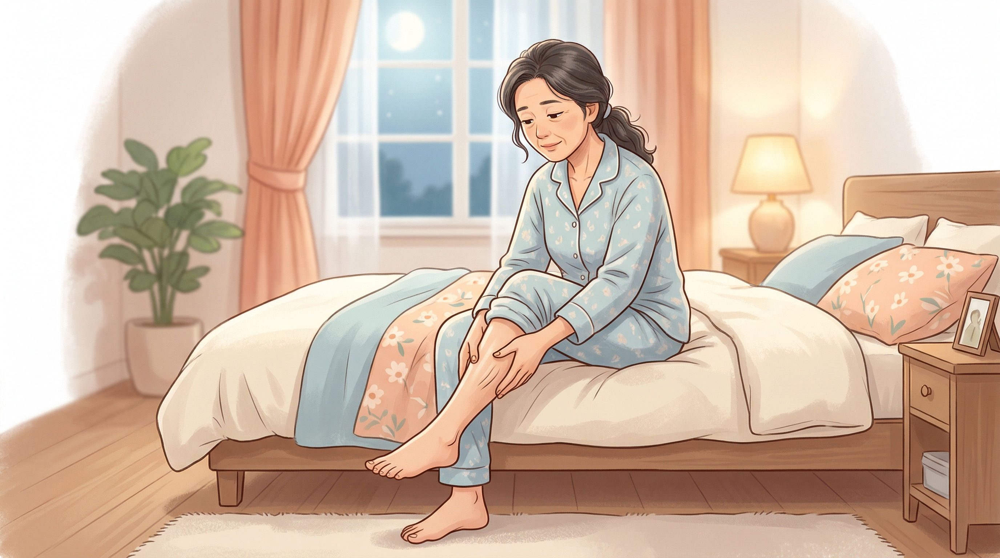

52 歲的林太太是國小老師，白天站著上課精神奕奕，但每到晚上躺上床，雙腿就像有成群螞蟻在皮膚底下爬行。那種感覺很難形容——不算痛，卻讓人坐立難安，非得起來走一走、甩甩腿才能暫時舒服一點。
起初她以為是白天站太久、血液循環不好，試了泡腳、穿彈性襪，但症狀時好時壞。半年下來，她幾乎每晚都要折騰一兩個小時才能入睡，白天上課開始打瞌睡，脾氣也變差了。先生勸她去看醫師，她卻不知道該掛哪一科——骨科？復健科？還是心臟科？
最後在家醫科醫師建議下，她轉診到神經內科，才終於得到答案：不寧腿症候群（Restless Legs Syndrome，簡稱 RLS），又稱為乙乙-乙伯病（Willis-Ekbom Disease）。
不寧腿症候群是一種睡眠相關的動作障礙，患者在休息或靜止不動時（特別是傍晚到夜間），雙腿會出現難以忍受的不適感，產生強烈想要移動雙腿的衝動。一旦起身走動或伸展，症狀就會暫時緩解，但停下來後又捲土重來。
這種不適感因人而異，常見的描述包括：
症狀通常出現在小腿深處，有時也會影響大腿、腳掌，少數人甚至會出現在手臂。
根據近年流行病學研究，全球約 7% 的成年人（20-79 歲）有不寧腿症狀，其中約 3% 達到臨床上需要處理的嚴重程度。換算下來，全球約有 3.5 億人受到影響。
幾個值得注意的數據： - 女性罹患率約為男性的 兩倍 - 孕婦在第三孕期的盛行率高達 26.5%（多數產後會改善） - 洗腎患者盛行率約 24% - 歐美地區盛行率較高，亞洲地區相對較低，但可能與就醫意識及診斷率有關 - 超過 50% 的患者有家族史
不寧腿症候群的病因目前尚未完全釐清，但科學家已經找到幾個重要的線索：
鐵是製造多巴胺（一種腦中的神經傳導物質）的重要原料。當腦中鐵質不足，多巴胺的合成就會受影響，進而導致神經訊號傳遞異常。
用個比喻來說：如果把神經系統想像成一座工廠，鐵就像關鍵的原物料，多巴胺是工廠的產品。原料短缺時，產品品質就會不穩定，工廠（也就是你的腿）就會發出「故障警報」。
研究發現，即使抽血的鐵蛋白數值看起來在「正常範圍」，腦部的鐵含量仍可能偏低。這也是為什麼醫師會建議不寧腿患者的鐵蛋白最好維持在 100 ng/mL 以上，遠高於一般檢驗報告的正常下限。
多巴胺在腦中負責調控動作與感覺。研究發現不寧腿患者腦中的多巴胺轉運蛋白（DAT）結合力明顯降低，顯示多巴胺系統的運作出了問題。
科學家已經透過全基因組關聯分析（GWAS）找到多個與不寧腿相關的基因位點，其中 MEIS1、BTBD9、PTPRD 是最顯著的候選基因。不過這些已知基因只能解釋約 10% 的遺傳風險，還有更多基因等待被發現。
除了多巴胺，研究也發現麩胺酸（glutamate，一種興奮性神經傳導物質）過度活化、GABA（一種抑制性神經傳導物質）功能不足，以及腺苷系統異常，都可能參與不寧腿的病理機制。
有些情況會引發或加重不寧腿症狀：
| 原因 | 說明 |
|---|---|
| 缺鐵性貧血 | 最常見的可逆因素 |
| 慢性腎臟病／洗腎 | 盛行率可達 24% |
| 懷孕 | 第三孕期最明顯，產後多數改善 |
| 糖尿病 | 周邊神經病變可能加重症狀 |
| 某些藥物 | 抗憂鬱劑（SSRI/SNRI）、抗組織胺、抗精神病藥物 |
| 酒精與咖啡因 | 可能惡化症狀 |
不寧腿症候群的診斷主要靠臨床症狀，不需要特殊的儀器檢查。根據國際不寧腿症候群研究群（IRLSSG）2012 年更新的診斷標準，必須同時符合以下四個條件：
輔助診斷線索包括： - 家族中有人也有類似症狀 - 睡眠中有周期性肢體抽動（PLMS）——伴侶常會發現患者睡覺時腿會規律性地踢動 - 對多巴胺類藥物有反應
醫師通常還會安排抽血檢查（特別是鐵蛋白和血清鐵），排除缺鐵等可治療的次發性原因。必要時也會安排睡眠多項生理檢查（PSG）來評估睡眠品質。
有些狀況跟不寧腿很像，但其實不一樣，需要鑑別： - 腿抽筋：突然肌肉緊繃、疼痛，與不寧腿的「不安感」不同 - 周邊動脈疾病：走路時腿痛，休息時緩解——剛好跟不寧腿相反 - 周邊神經病變：持續性的麻木刺痛，不一定跟活動有關 - 焦慮引起的坐立不安：全身性的，不限於腿部
根據 2025 年美國睡眠醫學會（AASM）最新治療指引，鐵質補充已被提升為首要治療策略。
2025 年 AASM 指引帶來了治療觀念的重大轉變：
這類藥物透過調節鈣離子通道來穩定神經興奮性，重要的是不會產生「增強效應」（augmentation，下面會解釋）。
以前的明星藥物如 pramipexole（普拉克索）、ropinirole（羅匹尼羅），現在被降級為有條件的不建議常規使用。
原因是長期使用這類藥物會產生一種叫做「增強效應」（augmentation）的麻煩現象：
增強效應就像是「藥越吃，症狀反而越嚴重」——症狀出現的時間提前、範圍擴大（從腿蔓延到手臂）、程度加重。研究顯示，使用多巴胺促效劑 5 年後，有 35-50% 的患者會出現增強效應；10 年的累積發生率甚至超過 60%。
對於症狀較輕微的患者，以下方法可能就足以改善：
生活習慣調整： - 建立規律的睡眠作息 - 避免睡前使用 3C 產品 - 減少或戒除酒精、咖啡因和尼古丁 - 適度運動（有氧運動和阻力訓練都有幫助，但避免睡前劇烈運動）
症狀發作時的緩解技巧： - 起來走一走、伸展腿部肌肉 - 按摩小腿 - 泡溫水澡或用熱敷墊 - 冷熱交替敷
其他輔助療法： - 瑜伽 - 冥想與放鬆練習 - 經皮脊髓電刺激（tsDCS）——新興的神經調節技術，研究顯示有潛力
不寧腿症候群不只是「腿不舒服」這麼簡單。長期睡眠品質不佳會帶來連鎖效應：
因此，如果你有相關症狀，不要覺得「只是小毛病」而忽視它。
回到我們的林太太。在神經內科確診不寧腿症候群後，醫師幫她抽血發現鐵蛋白只有 35 ng/mL——看起來在一般正常範圍內，但對不寧腿患者來說明顯偏低。
醫師先安排了口服鐵劑補充，同時開立低劑量的 gabapentin 在睡前服用。兩週後，林太太回診時笑著說：「終於可以好好睡一覺了！那些螞蟻搬家的感覺少了八成。」
三個月後追蹤，她的鐵蛋白上升到 110 ng/mL，症狀大幅改善，gabapentin 也順利減量。現在她睡前會做十分鐘的腿部伸展，維持每週三次的快走運動，生活品質回到了正軌。
免責聲明：本文僅供衛教參考，不能取代醫師的專業診斷與治療建議。如有疑慮，請諮詢您的醫師。